Después de una larga espera, volvemos al redil. Hemos estado preparando un montón de nuevas canciones, mejorado aquellas que ya teníamos y aprendido un buen puñado de versiones clásicas que, os prometemos, van a hacer las delicias del público más veterano.
Ahora mismo no hay ninguna fecha confirmada. Sin embargo te recomendamos que nos sigas en Facebook para estar atento de las primeras confirmaciones.
Si quieres contar con nosotros puedes escribirnos a Esta dirección de Correo electrónico
Esta página web está diseñada y desarrollada por Brais Jorge, utilizando Html5, Css3, JavaScript, Jquery y el famoso framework Foundation©
Si estás interesado en conseguir una página web, puedes ponerte en contacto en Esta dirección de Correo electrónico
Sueños de rock and roll, dice alguna canción por ahí, en nuestro caso el sueño estaba justificado, era por la mañana, coincidimos en algún lugar de nuestra casa y con las galletas en la boca y colacao en mano, alguien dijo; ¿hacemos un grupo?, el resto fue decir, no hay huevos, y aquí estamos.
En parte pudo haber sido así, esto fue allá por el 2014, lo empezamos como una manera divertida de pasarlo bien en casa compartiendo una pasión común, la música y sobre todo el rock, nos pusimos a ello, y pasado el tiempo hemos ido haciendo de ese entretenimiento, un proyecto. Había que ponerle un nombre, y como no nos conocemos ( cuando tocamos , jejeje ) , pues "Los Desconocidos"
En nuestro repertorio, alternamos versiones de clásicos del rock en castellano, con temas de creación propia, pero calificanos cuando nos veas en directo.......
Anxo Jorge
Era de niño un prodigio, con los años ya no es niño, tampoco prodigio, a veces parece acompañar las letras de las canciones susurrando coros y danzas.
Hace sonar las guitarras, tanto de las de madera como de las de enchufar, le da igual si tienen cuerdas o cuantas tenga.
Miguel Jorge
El patriarca de la banda, de su garganta surge un sonido similar a la voz humana, combinado con la música pueden parecer incluso canticos, ya que se escuchan por momentos algo parecido a palabras con apariencia coherente, (o no tan coherente)
Se encarga de hacer sonar la guitarra de cuerdas gordas, también conocida como “bajo eléctrico”, en ocasiones puede golpear instrumentos diabólicos con teclas de los que surgen dulces melodías de sonidos variados
Brais Jorge
El polipatetico de la banda, golpea con fuerza los tambores y platillos, pero en ocasiones puede parecer poseer sensibilidad mientras toca una guitarra cual juglar medieval (con mallas y todo) o perseguido por millones de ratas siguiendo el sonido que hace salir de una flauta, (de palo o de lata)
Grita por momentos partes de las letras de la canciones.
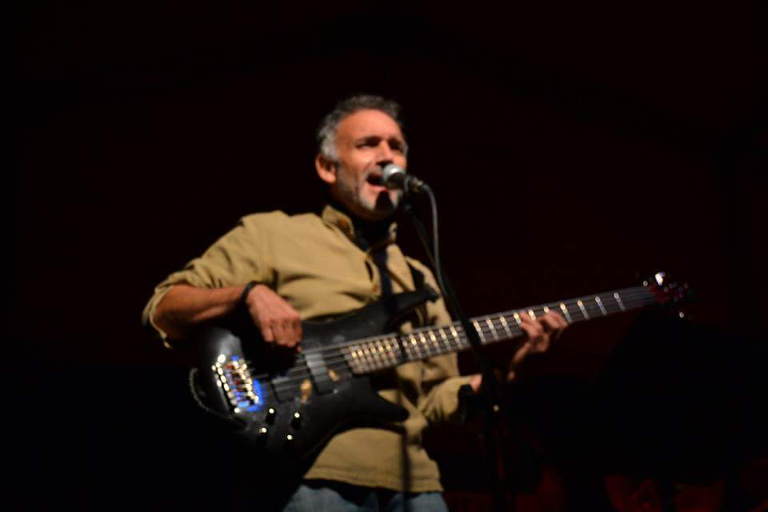
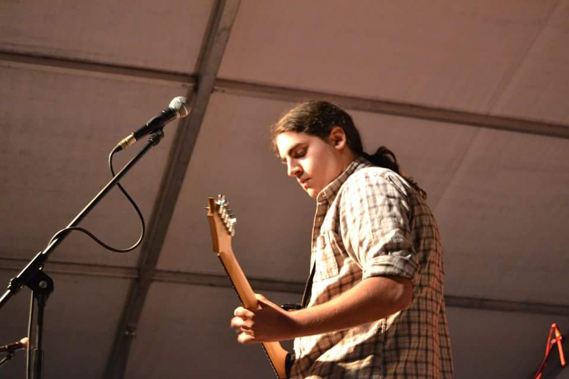
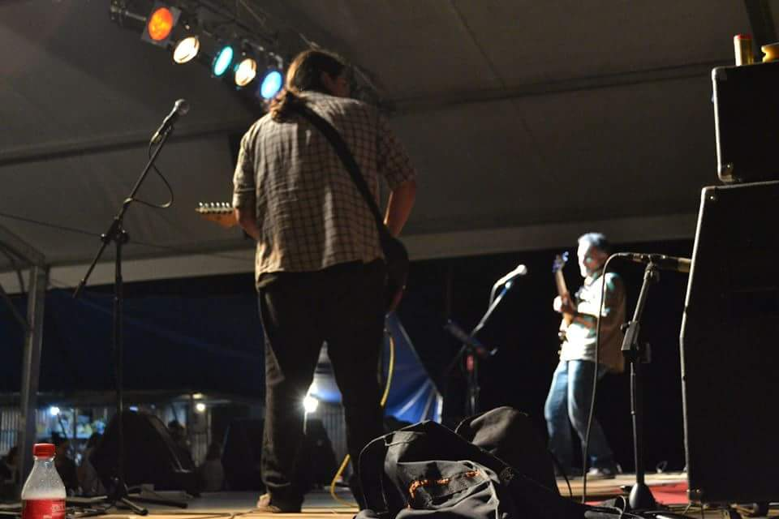
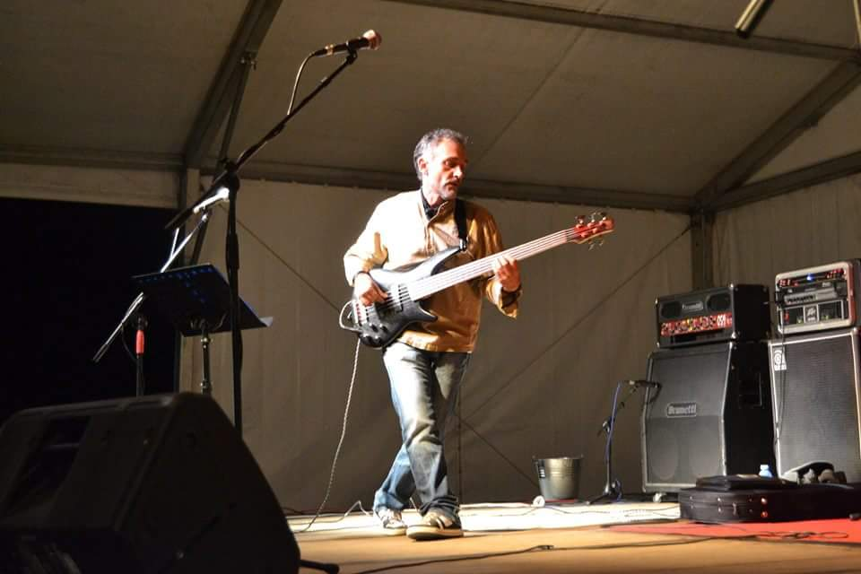
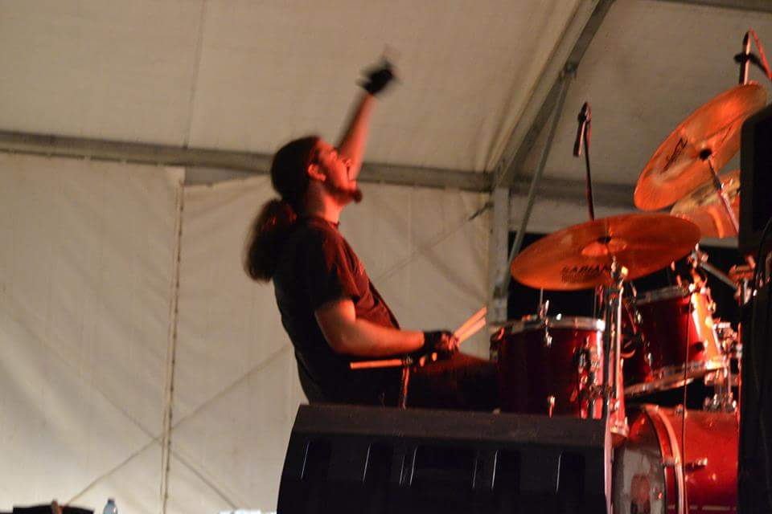
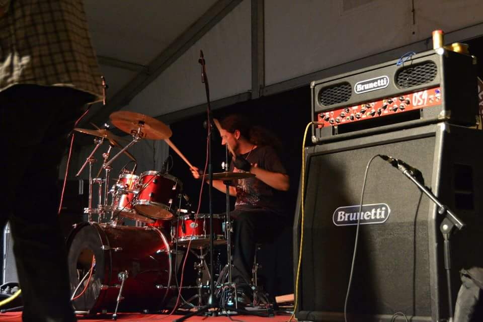
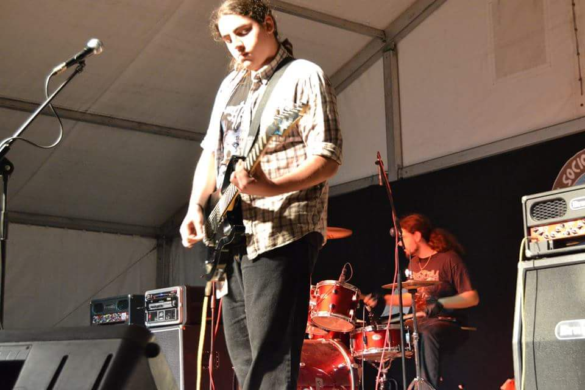
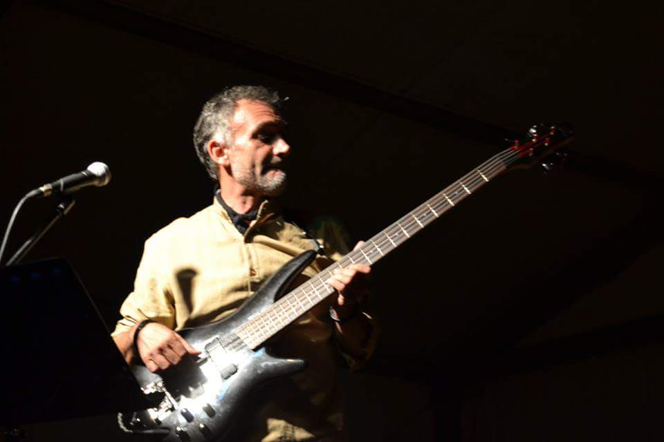
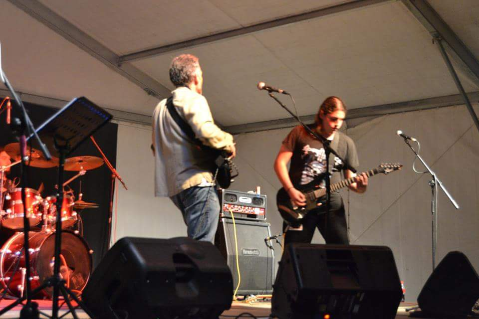
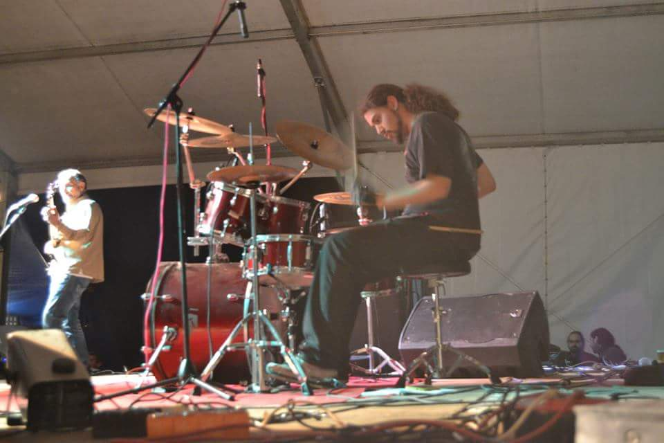
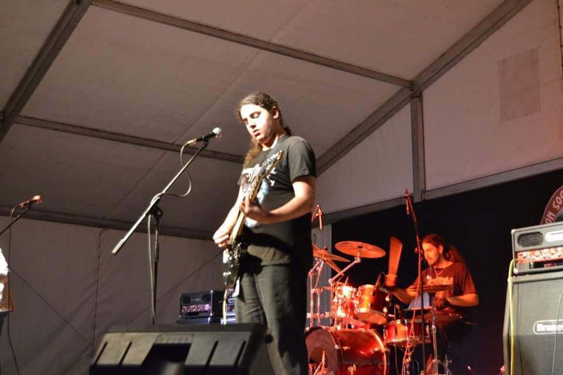
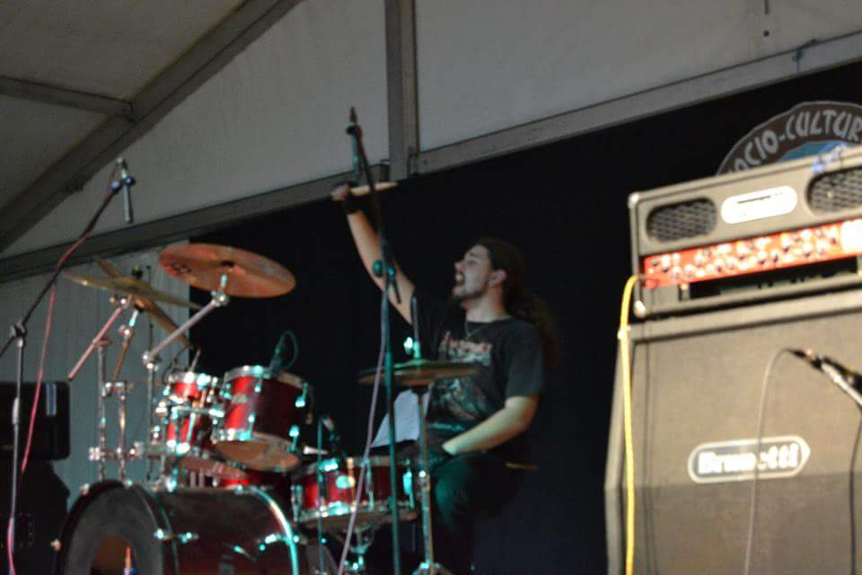
Esta página web está diseñada y desarrollada por Brais Jorge, utilizando Html5, Css3, JavaScript, Jquery y el famoso framework Foundation©
Si estás interesado en conseguir una página web, puedes ponerte en contacto en Esta dirección de Correo electrónico
Esta página web está diseñada y desarrollada por Brais Jorge, utilizando Html5, Css3, JavaScript, Jquery y el famoso framework Foundation©
Si estás interesado en conseguir una página web, puedes ponerte en contacto en Esta dirección de Correo electrónico
Esta página web está diseñada y desarrollada por Brais Jorge, utilizando Html5, Css3, JavaScript, Jquery y el famoso framework Foundation©
Si estás interesado en conseguir una página web, puedes ponerte en contacto en Esta dirección de Correo electrónico
Esta página web está diseñada y desarrollada por Brais Jorge, utilizando Html5, Css3, JavaScript, Jquery y el famoso framework Foundation©
Si estás interesado en conseguir una página web, puedes ponerte en contacto en Esta dirección de Correo electrónico
Esta página web está diseñada y desarrollada por Brais Jorge, utilizando Html5, Css3, JavaScript, Jquery y el famoso framework Foundation©
Si estás interesado en conseguir una página web, puedes ponerte en contacto en Esta dirección de Correo electrónico
Esta página web está diseñada y desarrollada por Brais Jorge, utilizando Html5, Css3, JavaScript, Jquery y el famoso framework Foundation©
Si estás interesado en conseguir una página web, puedes ponerte en contacto en Esta dirección de Correo electrónico
Eres el mediano del grupo. ¿Cómo lo llevas?¿Te sientes un poco fuera?
[Risas] La verdad es que no. “Los Desconocidos” es un grupo familiar, como decimos siempre, somos Padre, Hijo y Espíritu Santo, estamos cansados de vernos las caras todos los días y a todas horas, encajamos bastante bien, pero tampoco nos queda otra ¿No? [Risas].
Lo que se hace complicado a veces, es organizarnos, cada uno tiene sus responsabilidades, tanto mi padre como yo, trabajamos y mi hermano estudia en nocturno, así que apenas coincidimos, ahí es donde se nota la diferencia de edad, los ritmos de vida que tenemos son distintos, sin embargo siempre encontramos la forma de coincidir y ensayar, ¡que de eso se trata! [Risas]
¿Cuánto tiempo llevas tocando la batería?
Pues no sabría decirte exactamente, creo que llevo desde los 17… o quizás un poco antes. Empecé aprendiendo a tocar pachanga en una orquesta pequeñita y a partir de ahí, fué ir creciendo poco a poco. Tampoco soy un buen batería, simplemente disfruto tocando y procuro hacerlo lo mejor que puedo… A lo mejor ese es el problema, que no me lo tomo como un trabajo [Risas], aunque viéndolo por otro lado, es probable que si me lo tomase más en serio no estuviese en “Los Desconocidos”… Por lo menos en algo de fama mundial, los Queen del nuevo siglo… Sólo son suposiciones pero, casi seguro… [Risas]
Supongo que, ya sólo por diferencia de edad, tendréis gustos músicales diferentes… ¿Qué música escuchas tú?
Si que los tenemos, pero a grandes rasgos escuchamos rollos similares, mi padre es un rockero clásico y mi hermano busca rollos más modernos y progresivos, mucho metal. Yo también consumo cantidades ingentes de metal, pero mucho Folk y música pesada, pero al final todo empasta, llegas a los ensayos y no son estilos extremos, además todos nos movemos en muchos géneros y muchos estilos, así que podemos fusionar toda nuestra música y que no suene forzado. Creo que en ese sentido lo llevamos bien, hacemos lo que hacemos y cada uno pone un poco de sí… tenemos la suerte de que conecta, así que ¿Por qué no hacerlo?
¿Es difícil adaptarse a un grupo con diferentes gustos?
Como te decía, en nuestro caso no lo es. Porque, digamos, que venimos todos de la misma base, así que encaja y se empasta.
“Los Desconocidos “ es un grupo más bien familiar, sin embargo, poco a poco va teniendo cierto éxito ¿Esto te soprende?
La verdad es que a mi en concreto si. Ya te comentaba que no es fácil cuadrar los horarios, los ritmos de vida que tenemos son muy diferentes y a veces pasamos incluso meses sin ensayar, sin embargo poco a poco fuimos cogiendo cierta notoriedad, sobre todo en las ciudades cercanas y nos vamos obligando a dedicarle más tiempo, vamos creciendo poco a poco y la verdad es que la gente está respondiendo muy bien. Yo en concreto soy muy exigente con nuestra forma de tocar y a veces no tenemos días buenos, como todo el mundo , supongo, pero independientemente de eso, la gente siempre responde de maravilla. Tenemos un concepto bastante personal de lo que es el Rock, así que siempre sorprende, la gente se está cansando un poco de los grupos de las mismas versiones de siempre y la música excesivamente pesada, sobre todo en la ciudad de Vigo, que es donde más tocamos y nos movemos.
Supongo que a partir de ahora, el cielo es el límite ¿no? [Risas]
¿Hasta dónde crees que pueden llegar “Los Desconocidos”?
Sinceramente, no lo sé… Y tampoco me importa demasiado. Hacemos lo que hacemos porque nos gusta, para nosotros esto no es un negocio y yo creo que eso es lo que también nos dá personalidad. Nos importa más bien poco que en un garito haya 200 o 2 personas, para nosotros lo importante es tocar y disfrutar y que la gente, por poca que sea, disfrute con nosotros. Quizás dentro de unos años lleguemos mucho más lejos, eso no lo sé y tampoco lo sabré hasta que pase, a lo mejor mañana nos retiramos porque a mi padre le da la artrosis o algo [Risas], eso es parte del encanto ¿sabes?, hacer las cosas porque hay que hacerlas sin importar el porqué, es lo que nos dá carácter.
¿Por qué “Los Desconocidos”?
No teníamos nombre y no se nos ocurría ninguno. Aún por encima intentamos cambiarlo muchísimas veces, pero siempre se acaba quedando. [Risas] yo diseño la web y todo el tema de internet y sé que es un nombre horrible, la gente no nos va a encontrar en google en la vida, sin embargo nosotros lo intentamos. [Risas]. Quizás en algún momento hagamos un poco de Marketing y nos busquemos un buen nombre y una buena marca personal, por ahora nos conformamos con hacer buena música.
Supongo que como músico tendrás más proyectos en activo. ¿”Los Desconocidos” es una prioridad, o sólo un hobbie?
Tengo otro proyecto, pero tampoco es una prioridad. Para mi, en concreto, la música debe ser un hobbie. Fuí músico “profesional” durante cuatro años y sé que eso no es vida. Prefiero hacer música por amor y no por dinero, más que nada porque dinero, lo que se dice dinero, tampoco dá. Quizás algún día esto crezca y necesite hacerlo una prioridad, pero creo que aspirar a llenar estadios es un poco descabellado, aunque realmente nunca se sabe. ¿Te imaginas a “Los Desconocidos” en Woodstock, o en el Wacken Open Air, o alguno de estos festivales enormes? Ya te digo, sólo el tiempo dirá.
Esta página web está diseñada y desarrollada por Brais Jorge, utilizando Html5, Css3, JavaScript, Jquery y el famoso framework Foundation©
Si estás interesado en conseguir una página web, puedes ponerte en contacto en Esta dirección de Correo electrónico
Hemos optimizado nuestra página web para que ocupe ¡MENOS DE 5 MB!, esto quiere decir, que si tienes una tarifa de datos de 1GB, podrías entrar más de 200 veces seguidas... ¡Y NO SE TE GASTARÍA!
Nota para frikis:
En realidad, tu teléfono sólo descarga el contenido de la página 1 sóla vez, de forma que la página queda almacenada en tu teléfono y no vuelve a consumir datos.
Enhorabuena, puedes hartarte a clickar en todos los botones.
¡DISFRUTA!